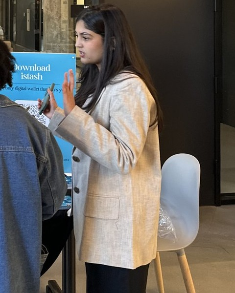
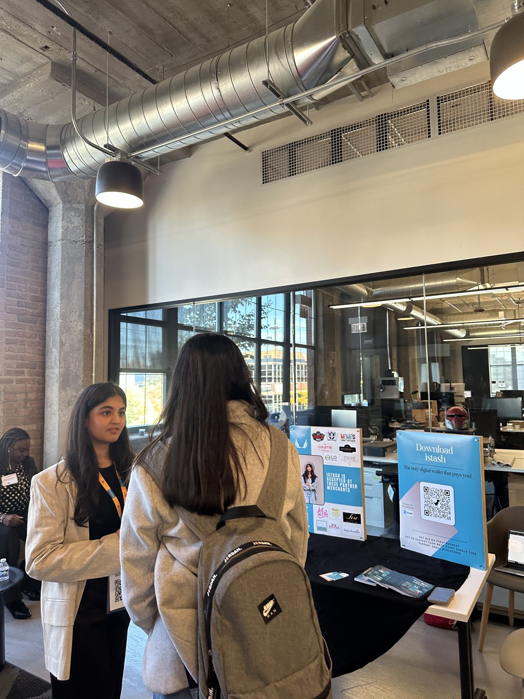
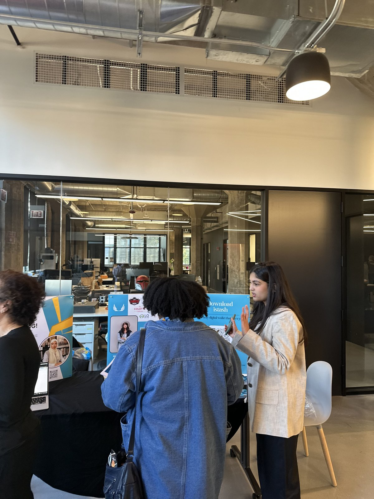
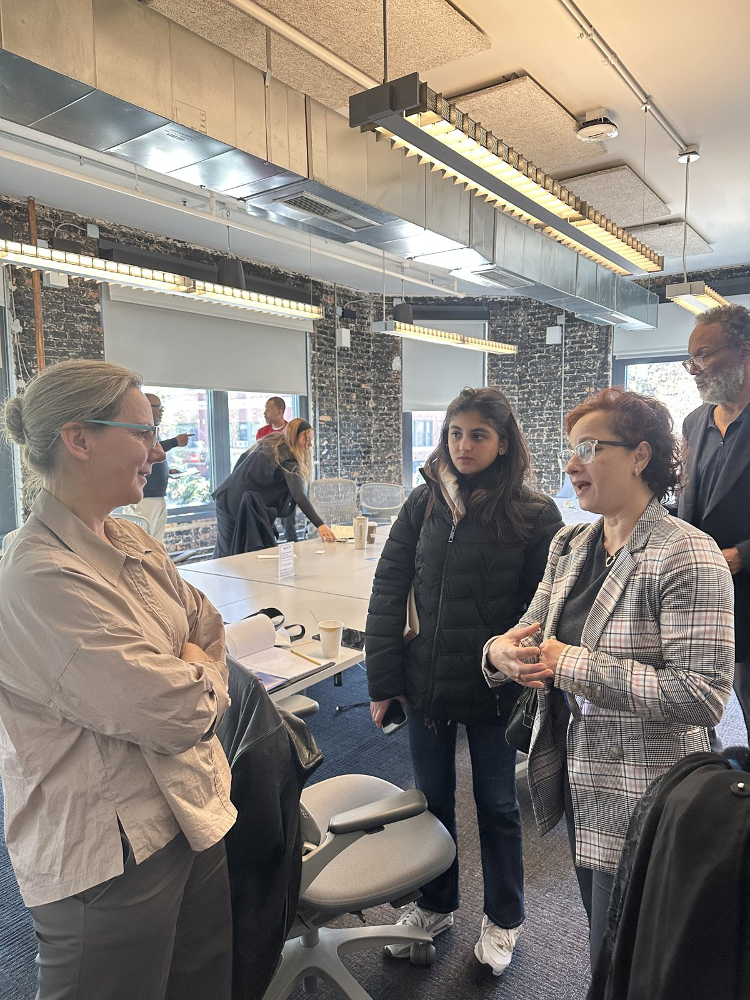

Hi, I'm Disha.

I followed curiosity from visual communication into marketing analytics.
I'm a marketing analytics graduate from DePaul University whose background began in visual communication and evolved through digital marketing, campaign analysis and consumer research.
Across those experiences, I became increasingly interested not only in creating marketing, but in understanding how people respond to it, and using that evidence to decide what should happen next.
The question I'm usually interested in is: why?
Why did one message outperform another? Why did an audience respond? What changed between seeing something and acting on it?
Those questions gradually moved my work from designing communication to measuring it. Today, I use campaign data, consumer research and experimentation to understand not only what happened, but what marketers should do next.
I tend to ask two questions about a campaign: does it work, and does it look like it was made by someone who understood the audience?
Outside of the dashboard.



How I became this kind of marketer.
Visual communication taught me how attention is created.
Digital marketing taught me that attention has to perform.
Marketing analytics taught me how to investigate why.
Now I connect all three.
Creative understanding helps me recognize what people notice. Marketing experience helps me understand what needs to perform. Analytics helps me determine why it did, and what should happen next.
Where the method came from
M.S. Marketing Analytics
C.V. Starr Endowed Merit Award
Bachelor's, Graphic Design / Visual Communication
Tools are useful. Knowing when to use them matters more.
AI-Powered Performance Ads Certification
Google Ads Search Certification
Inbound Marketing Certification
SEO Certification
The Digital Marketing Revolution
Salesforce Certified Associate
Tools for turning marketing questions into evidence.
Brand Strategy · Campaign Planning · Content Marketing · Social Media Marketing · Customer Success · Customer Journey Mapping
Adobe Photoshop · Adobe Illustrator · Adobe InDesign · Canva · Figma · CapCut · Copywriting
Google Analytics · Microsoft Excel · SQL · Tableau · Consumer Research · Campaign Reporting · A/B Testing
Microsoft Office · Mailchimp · Presentation Design · Project Coordination · Cross-Functional Collaboration · Stakeholder Communication
ChatGPT · Claude · Gemini · Microsoft Copilot, used for research synthesis and workflow efficiency, while keeping analysis and final judgment human-led.